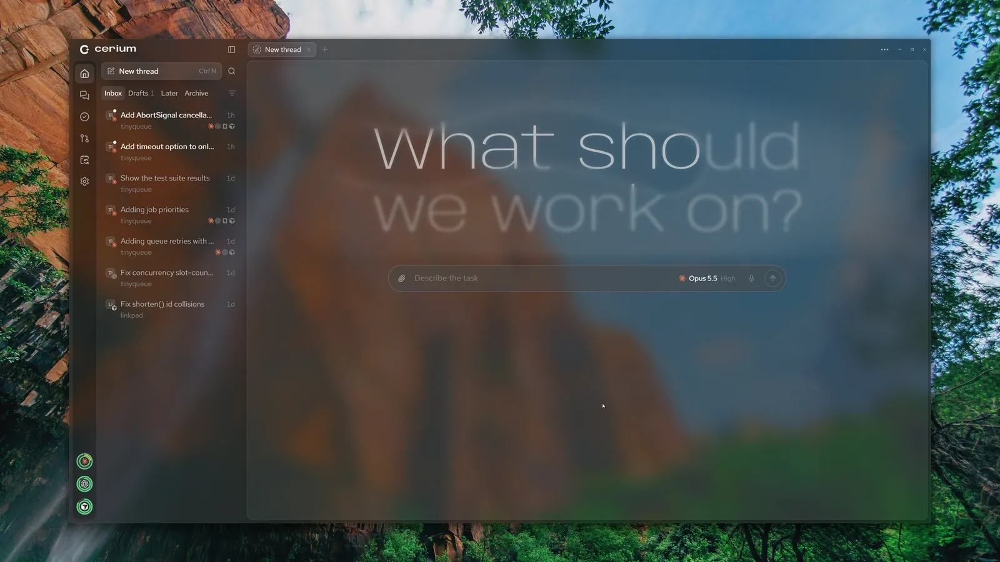
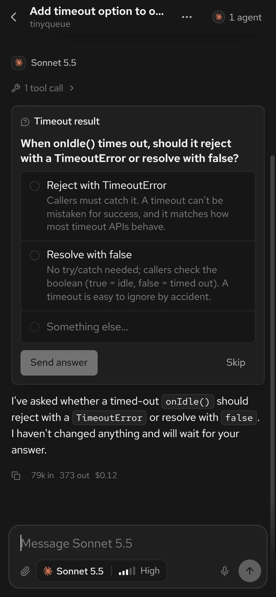
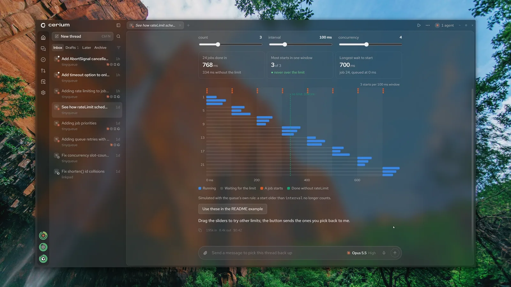
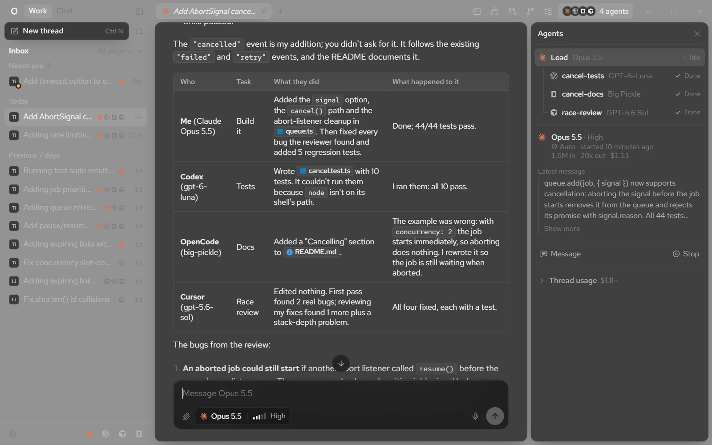
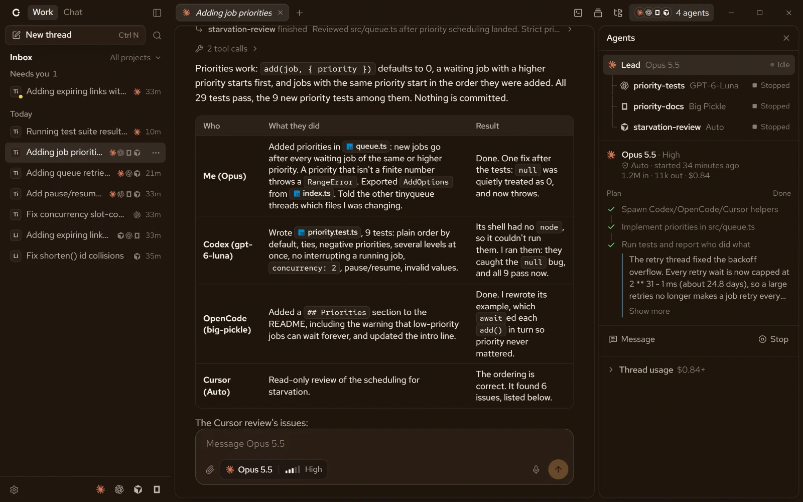
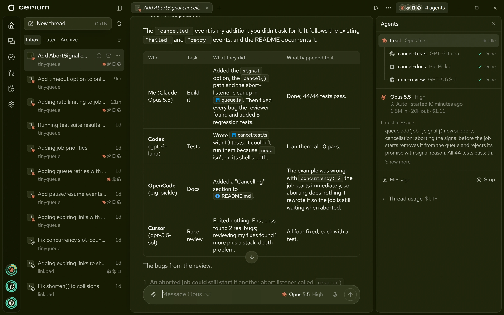
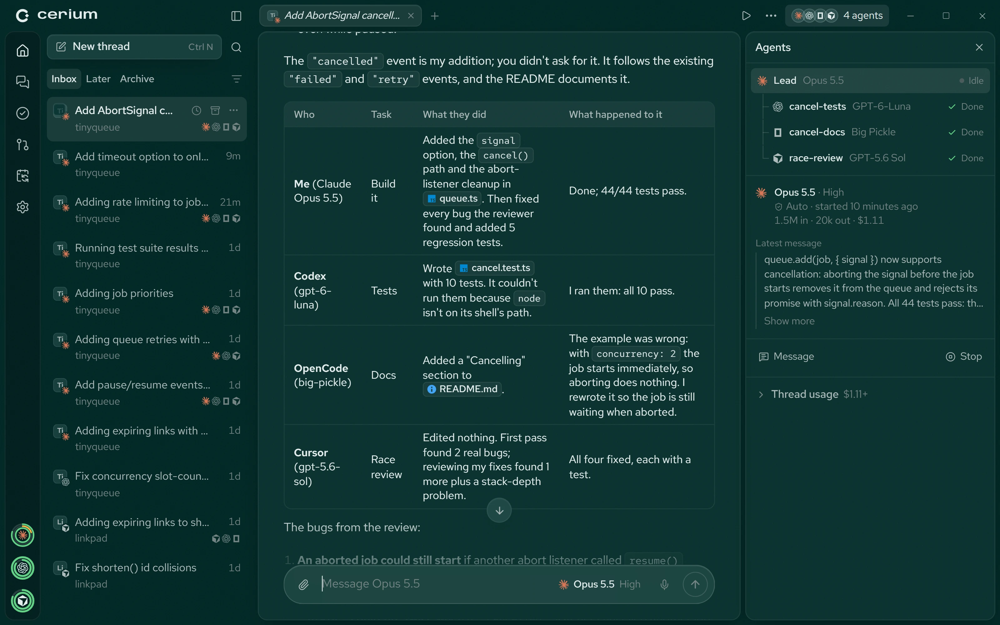
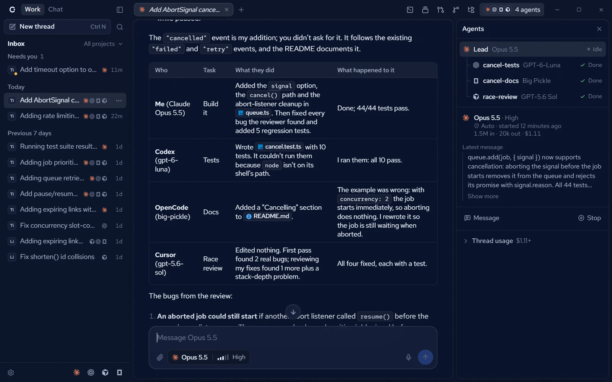
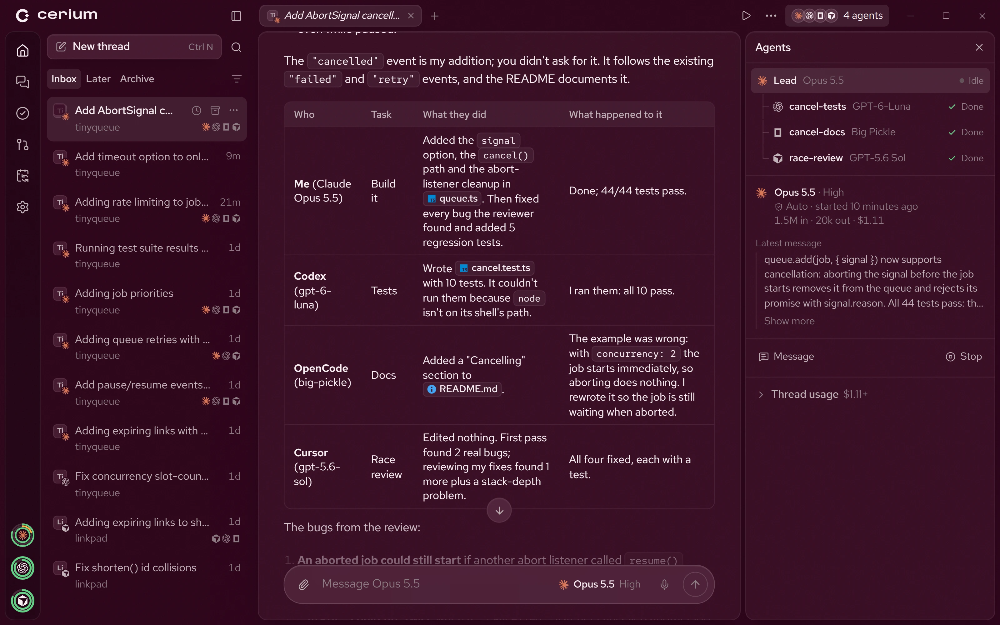

A second opinion from another lab.
Claude wrote it? Codex reviews the diff. The reviewer never shares the author's blind spots, and its findings land on the lines they're about.
A lead agent splits your job across every coding agent you use. They work at once, talk to each other, and hand you one answer.
The lead picks a harness, a model and the access each helper needs, and keeps them all in your thread.

Claude takes the lead.
Codex writes the tests.
OpenCode writes the docs.
Cursor hunts for races.
You get one answer.
Helpers message the lead and each other, and say so before they touch a file someone else is editing.
Claude wrote it? Codex reviews the diff. The reviewer never shares the author's blind spots, and its findings land on the lines they're about.
When a check fails on a commit an agent pushed, a thread starts with the logs and your standing orders. Your phone hears when it's fixed.

Agents draw charts, timelines and what-ifs right in the thread. Drag a slider and the page reruns.







Every agent is the real harness on your own plan. Cerium starts each one's sign-in and never reads its keys.
Free and open source, for Windows, macOS and Linux.